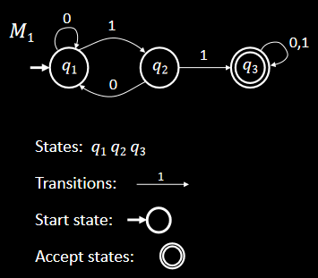
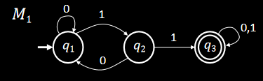
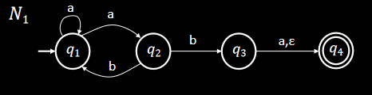
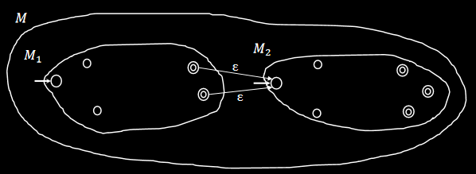
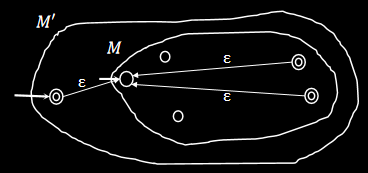
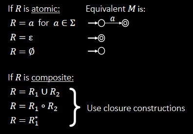
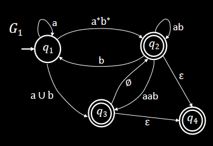
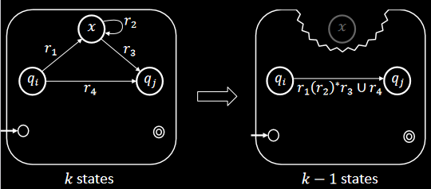
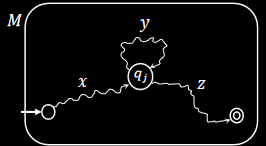

正则语言
- 有穷自动机
- 非确定性
- 正则表达式
有穷自动机————一个例子

有穷自动机————形式化定义
Def：有穷自动机是一个5元组(Q,Σ,δ,q0,F)
- Q是一个有穷集合，称为状态集；
- Σ是一个有穷集合，称为字母表；
- δ:Q×Σ→Q是转移函数；
- q0∈Q是起始状态；
- F⊆Q是接受状态集。
有穷自动机————计算的定义
设M=(Q,Σ,δ,q0,F)是一台有穷自动机，w=w1w2...wn是一个字符串且对任意wi都有wi∈Σ。若存在Q中的状态序列r0r1r2...rn满足：
- r0=q0（从起始状态开始）；
- δ(ri,wi+1)=rr+1,i=0,1...n−1；
- rn∈F（以接受状态结束）。
则称M接受w
正则语言————例子
- Def：若A是机器M接受的全部字符串的集合，称A是机器M的语言，记作L(M)=A
- Def:若一种语言被一台有穷自动机接受，称这种语言为正则语言
例子：L(M1)={w∣w包含字串11}

正则运算及其性质
对象是正则语言的运算
设A和B是两个语言，定义正则运算并、连接、星号如下：
- 并：A∪B={x∣x∈A或x∈B}
- 连接：A∘B={xy∣x∈A且x∈B}
- 星号：A∗={x1x2...xk∣k⩾0且每一个xi∈A}
例子：令A={a,b},B={c,d}
- A∪B={a,b,c,d}
- A∘B={ac,ad,bc,bd}
- A∗={ϵ,a,b,aa,bb,ab,aabb,...}
正则运算的封闭性：并运算
定理：若A1,A2为正则语言，则A1∪A2为正则语言
证明：
不妨设自动机M1=(Q1,Σ,δ1,q1,F1)识别A1,M2=(Q2,Σ,δ2,q2,F2)识别A2
正则运算的封闭性：并运算
我们可以构建自动机M=(Q,Σ,δ,q0,F)，其中
- Q=Q1×Q2={(q1,q2)∣q1∈Q1且q2∈Q2}
- δ((q1,q2),a)=(δ1(q1,a),δ2(q1,a)),a∈Σ
- q0=(q1,q2)
- F={(r1,r2)∣r1∈F1或r2∈F2}
正则运算的封闭性：连接运算
似乎无法直接参照并运算的思路，构建一个自动机来完成任务，因为不知道在哪里分开输入。
例子：
- A1={以1结尾的字符串},A2={以0结尾的字符串}
- 输入：001100
这需要引入非确定性的概念
非确定性————引入
性质：
- 一个状态可以是若干个转移箭头的起点（0，1或更多）
- 状态转移可以不需要输入，即直接跳到下一个状态（箭头上标有ϵ）
- 只要有一条路径的终点是接受状态即接受该输入
例子：

非确定性————形式化定义
Def 1.17:非确定性有穷自动机（简称NFA）是一个五元组(Q,Σ,δ,q0,F)：
- Q是一个有穷集合，称为状态集；
- Σ是一个有穷集合，称为字母表；
- δ:Q×(Σ∪{ϵ})→P(Q)是转移函数（即从一个状态可以转移到若干个状态，而非一个）
- q0∈Q是起始状态；
- F⊆Q是接受状态集。
非确定性————NFA与DFA的等价性
显然可以用非确定性有穷自动机（NFA）表示确定性有穷自动机（DFA），只需证：可以用DFA表示NFA
要点：DFA可以追踪NFA中所有状态的任意子集
证明：不妨设NFA:N=(Q0,Σ,δ0,q0,F0)
构造DFA：M=(Q1,Σ,δ1,q1,F1)
- Q=P(Q0)
- δ1(R,a)={q∈Q0∣存在r∈R,使得q∈δ0(r,a)}
- F1={R∈Q1∣R包含N的一个接受状态}
用NFA证明正则运算的封闭性:连接运算
思路：增加一些ϵ箭头，这些箭头从前一种语言的接受状态指向后一种语言的起始状态

用NFA证明正则运算的封闭性:星号运算
思路：增加一些ϵ箭头，这些箭头从的接受状态指向起始状态

正则表达式
我们可以利用正则运算，从零开始递归地定义正则表达式（正则语言的起点是有穷自动机）：
Def：我们称R是一个正则表达式，如果：
- a，即字母表Σ中的一个元素
- ϵ，即仅包含空串的语言
- ∅, 即不包含任何字符串的语言
- R1□R2，其中R1,R2为正则表达式，□是并运算或连接运算
- R1∗，其中R1是正则表达式
正则表达式与有穷自动机的等价性：→
定理：如果一个语言可以用正则表达式描述，则这个语言是正则的
思路：将正则表达式转化为一台识别这种语言的NFA

正则表达式与有穷自动机的等价性：←
定理：如果一个语言是正则的，则这个语言可以用正则表达式描述
思路：将接受这个语言的DFA转化为广义非确定性有穷自动机（GNFA），再将这台GNFA转化为2-状态GNFA，则仅剩的转移方程就是要求的正则表达式
广义有穷自动机(GNFA)
Def：GNFA就是转移箭头可以用任意正则表达式作标号的非确定性有穷自动机。

GNFA→正则表达式
引理：每个GNFAG都有等价的正则表达式R
证明：对GNFA G的状态数k作归纳证明
归纳基础（k=2）：只有一个箭头，这个箭头描述的字符串就是R
归纳步骤：假设对k−1个状态为真，下证该引理对k个状态为真。

非正则语言与泵引理
问题：我们该如何知道一个语言是否是正则语言？
泵引理：若A是一个正则语言，则存在一个数p使得：若s是A中任一长度不小于p的字符串，则s可以被分成3段，s=xyz，满足下列条件：
- 对每一个i⩾0,xyiz∈A
- ∣y∣>0
- ∣z∣⩽p
泵引理的证明
证明思路：令p为识别A的DFA的状态数，若一个字符串的长度大于p，则根据鸽巢原理，有穷自动机处理过程必然经历了两个相同的状态，可根据这两个状态来划分x,y,z

证明一种语言是非正则语言
- 假设语言A是正则的
- 根据泵引理，找到长度p并将字符串划分为xyiz
- 构造字符串s,使之长度大于p且不符合泵引理的划分要求
谢谢！